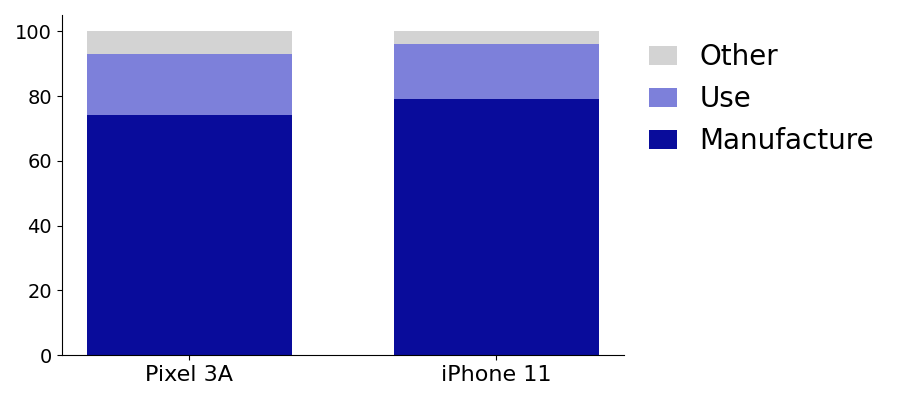

Our goal: Extend the useful lifetime of computing devices. We are motivated by the observation that consumer electronics like smartphones take a lot more carbon to manufacture than they do to use—about 80% of the lifetime carbon footprint is from manufacturing alone.
This is particularly unfortunate given that smartphones contain many components that could be useful for other applications—CPUs, GPUs, microphones, etc.
Junkyard computing studies the repurposing of unwanted smartphones for a wide range of non-consumer applications. We aim to find the best possible use for the computing and sensing capabilities of unwanted hardware. Like this website, which is hosted on a Pixel 3a smartphone.
Keep scrolling for more examples of what we've been up to.
The Junkyard Cloudlet
As a first step towards cloud computing on smartphones, we built a proof-of-concept cluster of ten Pixel 3 smartphones that is able to host large end-to-end cloud computing applications from the DeathStarBench suite. This junkyard cloudlet gives similar performance as an AWS-based alternative, while being 10x more carbon efficient and 40x cheaper.
For more information on our cloud computing efforts, see the paper.
Smartphone Sensors
Is that a burrito under a bush? No! It's a smartphone wrapped in a thermal blanket to keep out the sunshine. We have deployed repurposed smartphones as audio loggers at the Scripps Coastal Reserve. These smartphone sensors take periodic audio recordings with the goal of monitoring bird populations.
This page last updated 2-13-2023